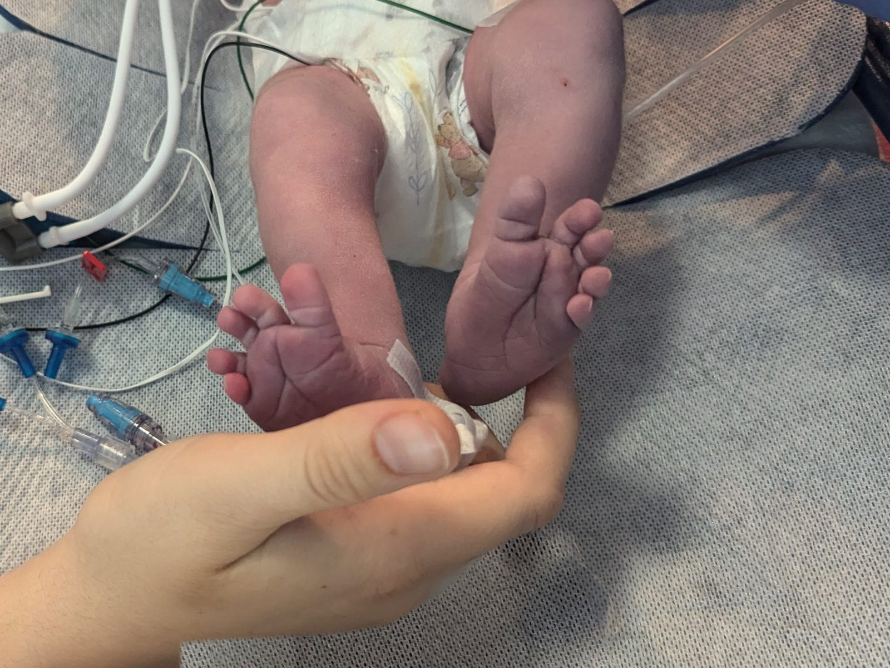
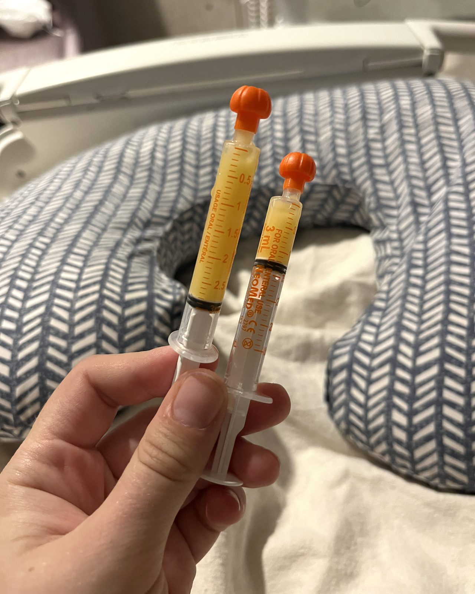

NICU Doula Support
Babies go to the NICU for many reasons: being born early, needing help with breathing or blood sugar, jaundice, or a diagnosis. Some stays last a few days, others for months. Whatever brought you here, this support is for you.

The NICU team cares for your baby. I'm here for you.
A NICU stay is a lot to take in. I give you space to talk through how you're feeling, help you connect with your baby, and make sure you don't go through this alone.
How I can help
- Before birth: if your baby may need the NICU, we'll find out what to expect at your hospital and plan for your baby's first hours.
- The first days: getting ready for your first visit, caring for your own recovery, and starting to pump if that's your plan.
- During the stay: questions for rounds, ways to bond before and after you can hold your baby, pumping support, and help for partners and siblings.
- Going home: getting ready for discharge, and support in the first weeks at home, when a lot can come up.

Lactation support in the NICU
Pumping for a baby in the NICU often looks different from how we picture feeding our babies. From hand expressing colostrum in the first hours to a pumping plan that leaves room for sleep and recovery, I'll help you work toward your feeding goals.
My own baby spent time in the NICU. Even with my professional background, I felt lost. That experience is why I do this work.
Meet Amanda
Where I work
I support families with babies in any Milwaukee-area NICU, including Children's Wisconsin, Aurora Sinai, Aurora West Allis, Ascension Columbia St. Mary's, and Ascension St. Joseph. Visits can happen at the hospital (as policy allows), at home, or virtually.

How it works
Reach out
Call, text, or fill out the inquiry form. I typically respond within one business day.
A conversation
We take about 30 minutes to make sure we are a good match and find the right support for your family.
Support begins
Visits at the hospital, at home, or virtually, with text and email support between visits.